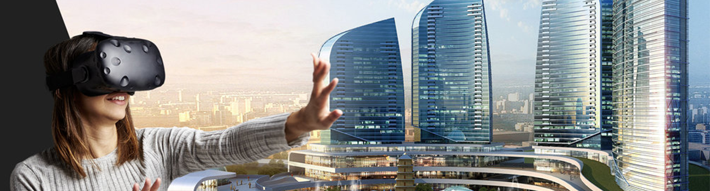

Virtual reality - also in real estate
Find the dream home - save time
Virtual Reality is used more, and more in all different kinds of companies. The most common we know is gaming, where we put on the ‘’glasses’’ and can find our self in the game-world. But it is not just for games anymore.
Now it has come to Real Estate as well. Imagine helping people find the perfect home. It is full of light and it fits them 100%. You can now show people their dream house or apartment with Virtual Reality without taking them to the house or apartment. It saves you and the buyer a lot of time and gives the buyer a virtual experience of their new home, so let them put on those ‘’glasses’’ and find them their perfect home with VR!
A creative and quick way to show them what you have to offer
People are in a hurry today. They have to work, pick up their kids and cook dinner. Buying a new home is one of the most important things in your life, and when people are busy, VR is a smart and quick way to show them their potential new home. It saves the company and the buyer a lot of time, and the faster it goes the faster the deal is in the house.

Virtual experience of a lifetime
Not only will the buyer be able to see their possible new home, they will also have a fun experience. It is our job to make the highest quality of the digital solution, for your company, so that you and your buyers can be impressed by the results.
Virtual Reality is the future, let us help you and your company get there!